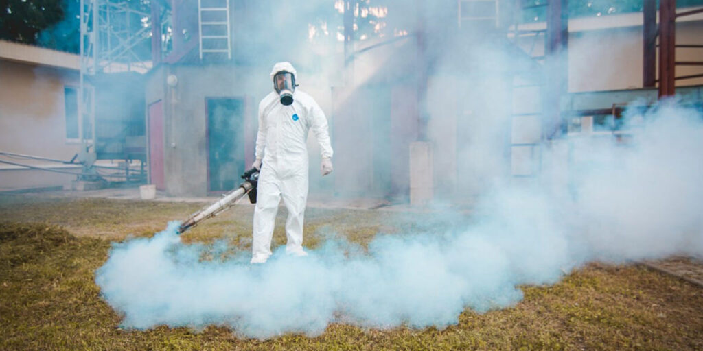

Що таке фуміганти?
Фуміганти – це пестициди, які проникають в організм шкідливих комах або тварин через дихальні шляхи у формі газу. Вони можуть бути у твердій формі (таблетки, драже), рідкій (готові до використання рідини) або газоподібній формі. Фуміганти ефективно проникають у важкодоступні місця, такі як нори гризунів, щілини та зернові маси, де звичайні інсектициди не можуть діяти.
Сфери застосування фумігації
Фумігація використовується в різних галузях:
- Сільське господарство та садівництво: для знищення шкідників культур, знезараження зерна в силосах і складах.
- Транспорт: для знезараження палет, піддонів, причепів і контейнерів.
- Деревообробна промисловість та будівництво: для боротьби зі шкідниками в дерев'яних виробах, меблях, підлогах, дахах та будинках.
- Об'єкти культурної спадщини: для обробки церков, музеїв, палаців, готелів та складів.
- Житлові приміщення: для боротьби зі шкідниками деревини в домашніх умовах.
Види фумігантів за діючою речовиною
Основні діючі речовини фумігантів:
- Бромистий метил (CH3Br): дуже токсичний засіб, використовується для знищення комах, гризунів та шкідників у різних галузях.
- Фосфін (PH3): газ без запаху, кольору і смаку, застосовується для фумігації зернових культур та обробленої деревини.
- Дихлофос (ДДВФ): використовується для боротьби з широким спектром шкідників.
- Сульфурілфторид (SO2F2): ефективний для обробки будівель та дерев'яних конструкцій.
- Азот (N2): використовується для створення анаеробних умов, що знищують шкідників.

Процес фумігації зерна